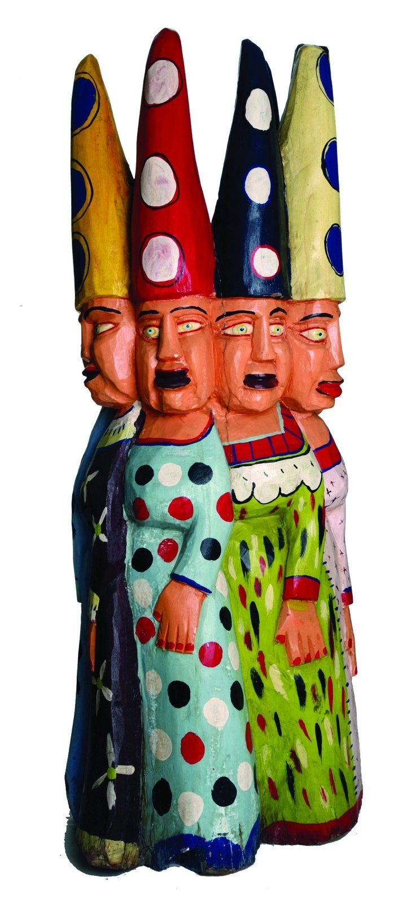
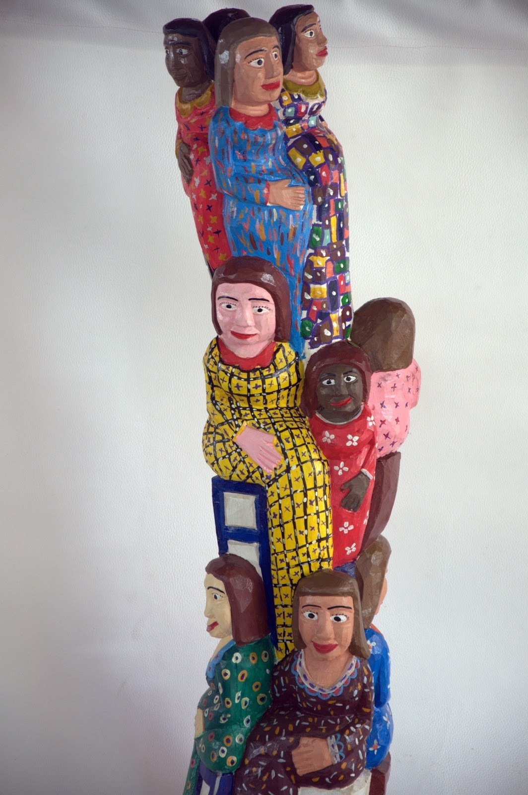
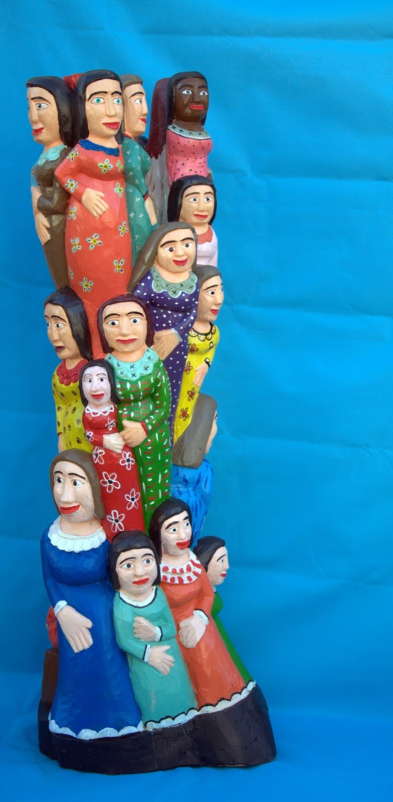
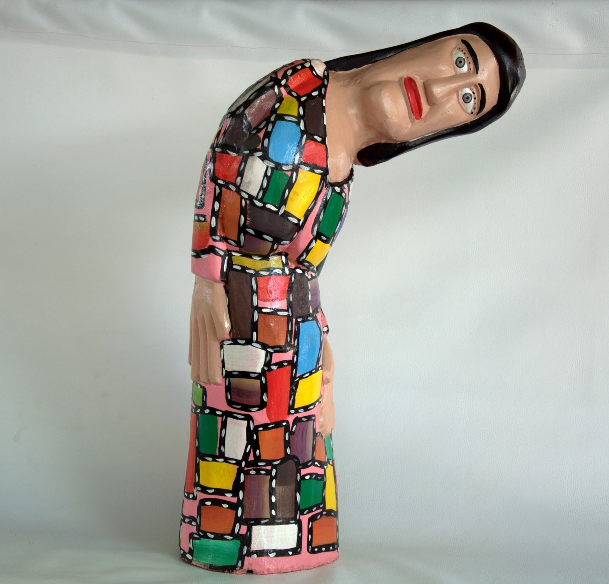
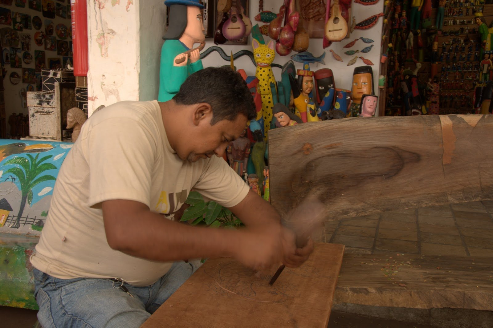
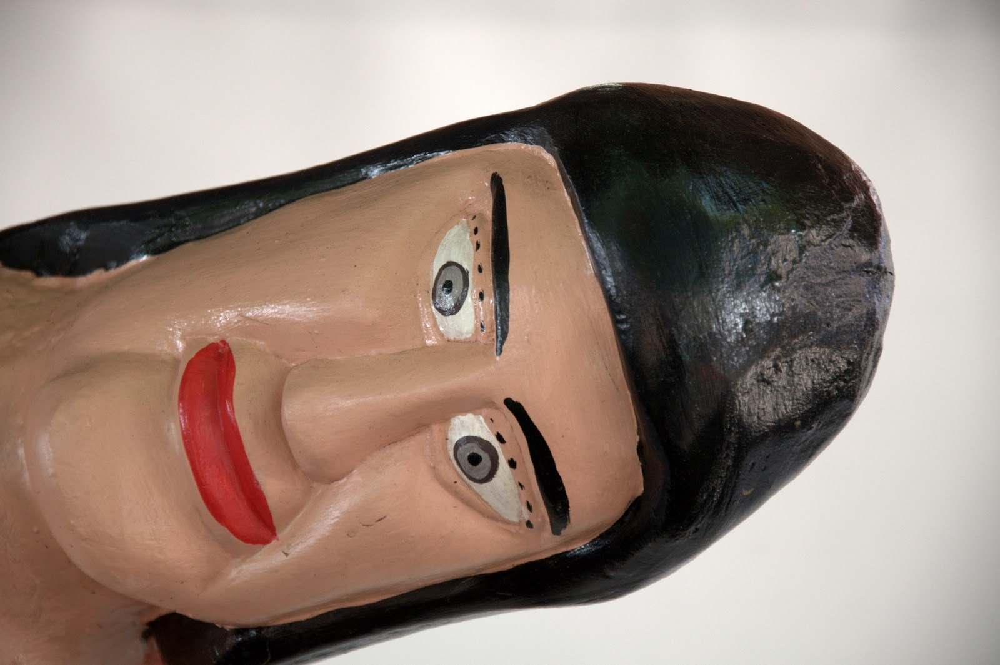
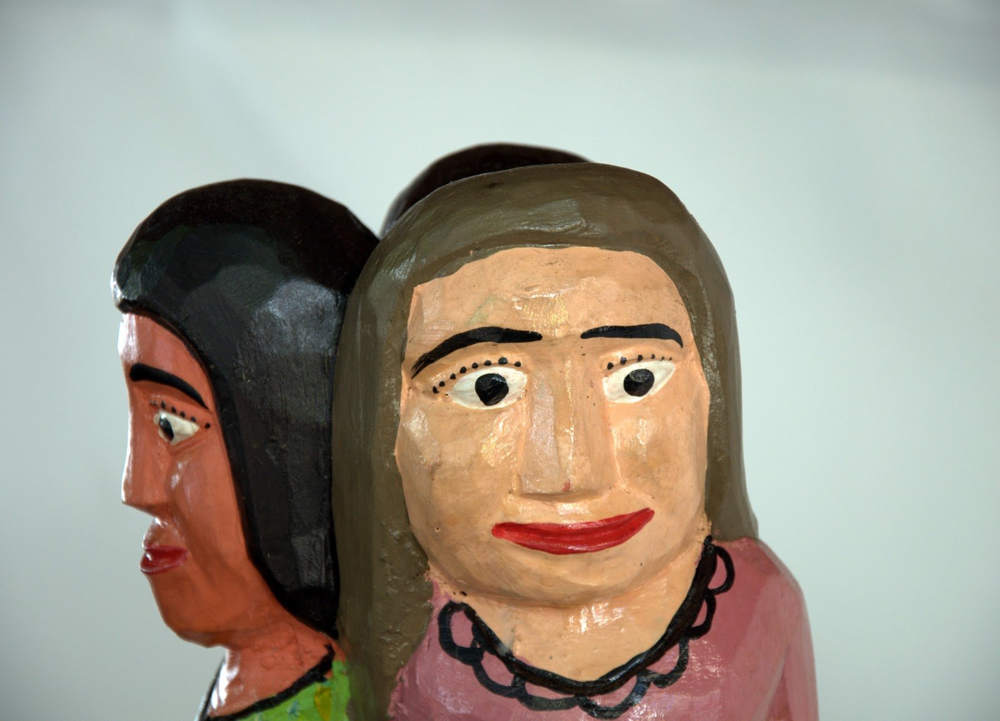

Diomar das Veias
As “veias” nordestinas talhadas em madeira.
Diomar Freitas Dantas, conhecido como Diomar das Veias ou Homem das Velhas, transformou a madeira em personagens femininas do cotidiano nordestino, com cor, humor e presença popular.
Diomar nasceu em 1974, em Acopiara, no Ceará, e construiu sua trajetória artística em Juazeiro do Norte, onde trabalhou no Centro de Cultura Popular Mestre Noza.
Antes de se afirmar como escultor, passou por diferentes trabalhos. O contato com a tradição de madeira do Cariri e a influência de Mestre Nino aproximaram Diomar da talha. Segundo registro do Sebrae Artesanato, ele começou a produzir por volta de 1997, depois de conhecer o funcionamento da associação de artesãos.
No início, esculpia animais. Com o tempo, passou para figuras humanas, especialmente mulheres idosas: beatas, rendeiras, rezadeiras, mães com crianças, senhoras alegres, zangadas ou concentradas em tarefas cotidianas.
Essas personagens deram origem ao apelido “Diomar das Veias” ou “Homem das Velhas”. Em sua obra, a velhice aparece como força narrativa: rugas, vestidos coloridos, grupos compactos e expressões marcantes guardam memória, religiosidade e vida comunitária.
Diomar faleceu em abril de 2019, em Juazeiro do Norte, aos 45 anos. Seu trabalho segue associado ao Centro Mestre Noza e à força da escultura popular cearense em madeira.
Na madeira de Diomar, as senhoras do Nordeste ganham corpo, cor e voz.
Para observar na peça
- Figuras femininas idosas como tema central
- Cor intensa e composição vertical das esculturas
- Expressões faciais: humor, severidade, doçura e memória
- Relação com Juazeiro do Norte, Padre Cícero e cultura popular do Cariri
- Marcas da talha e do acabamento policromado
Materiais e técnica
Galeria de peças e referências de estilo
Obras e peças públicas reunidas para reconhecer linguagem, materiais e técnica. As peças da exposição são vistas apenas ao vivo.







Fontes e créditos
- Museu Afro Brasil Emanoel Araujo — Acervos: Diomar das Veias https://museuafrobrasil.org.br/acervos/
- Galeria Pontes — Diomar Freitas Dantas https://www.galeriapontes.com.br/project/diomar-freitas-dantas/
- Sebrae Artesanato — Os herdeiros de Noza na arte com madeira https://sebraeartesanato.wordpress.com/2014/01/06/patrimonio-os-herdeiros-de-noza-na-arte-com-madeira/
- Gazeta do Cariri — Morre em Juazeiro o renomado escultor Homem das Velhas https://www.gazetadocariri.com/2019/04/morre-em-juazeiro-o-renomado-escultor.html
- Blog Diomar das Veias — Minhas veias http://diomardasveias.blogspot.com/2010/09/minhas-veias.html
- Blog Diomar das Veias — Outras veias http://diomardasveias.blogspot.com/2010/09/outras-veias.html
- Blog Diomar das Veias — Trabalhando no Centro de Cultura Popular Mestre Noza http://diomardasveias.blogspot.com/2010/09/trabalhando-no-centro-de-cultura.html
- Con/Vida — Diomar http://convida.org/diomar.html